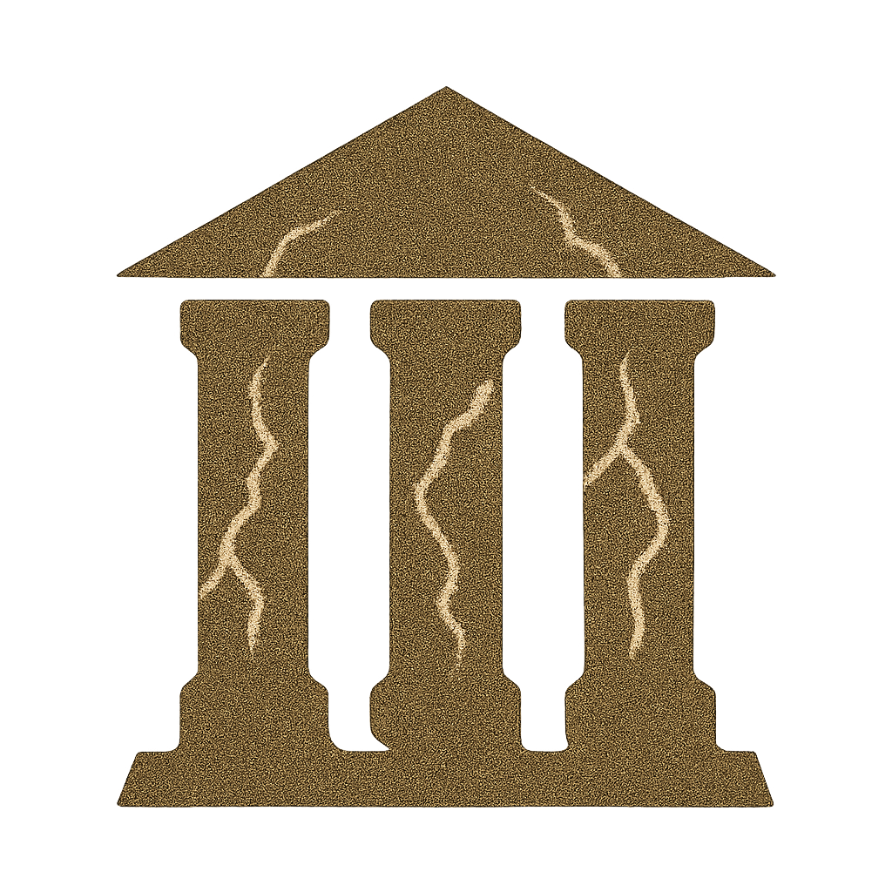
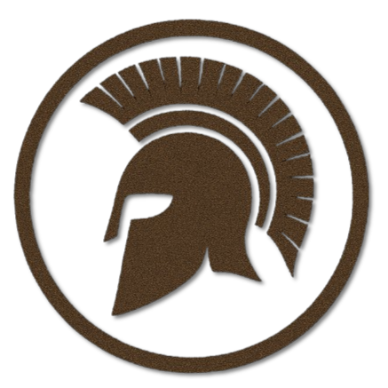

Götterkreis
Die Neun Göttlichen
Neun primäre Gottheiten, fünf Souveräne und fünf Untergottheiten – verbunden im Glauben der Alerischen Kirche.
Archivblatt öffnenAlerias Überlieferungen Der Glaube
Von den ersten Mächten bis zu den vielen Wegen des Glaubens. Ein Codex der Religionen, Gottheiten und jener, die zwischen ihnen wandeln.
Den Codex aufschlagen10 Religionen · 7 Kapitel · Eine Welt voller Überlieferungen
Das Göttliche trägt viele Namen.
Vor dem ersten Zeitalter
Die Titanen, Ahnen oder einfach Urgötter – bisweilen unter anderen Namen bekannt – sind Wesen, die das Universum bewohnten, bevor es Menschen und ihre Welt gab. Sie bilden die Grundlage aller Gottheiten, die von den Menschen als Ahnen verehrt oder als Dämonen gefürchtet werden.
Das Register der Überlieferungen
Erkundet die Kapitel oder folgt einem Namen durch den Codex.
Götterkreise
Der göttliche und der infernale Kreis: ihre Mächte, Verbindungen und Überlieferungen.
Götterkreis
Neun primäre Gottheiten, fünf Souveräne und fünf Untergottheiten – verbunden im Glauben der Alerischen Kirche.
Archivblatt öffnenInfernaler Götterkreis
Die Zehn Infernalen, fünf Untergötter, infernale Geweihte und Gefallene – ihre Wesenheiten, Domänen, Pakte und Hinterlassenschaften.
Archivblatt öffnenReligionen
Kirchen, Pantheons und Bündnisse – die überlieferten Namen des Glaubens.

Kirche
Der Glaube an die Neun Göttlichen, ihre Souveräne und Untergottheiten.
Archivblatt öffnen
Pantheon
Die alten Nordgötter
Der Nordkult vereint lichte und dunkle Aspekte in neun Hauptgöttern. Runen, Überlieferung und die Deutung ihrer Priester prägen den Glauben der Nordmänner.
Archivblatt öffnen
Pantheon
Der alte Glaube der Druiden
Der von den Druiden überlieferte Urglaube: neun Göttliche, fünf Souveräne und fünf Untergötter, deren Tiergestalten die Verbindung zwischen Welt und Gottheit sichtbar machen.
Archivblatt öffnen
Triarchie
Dreiheit und Eroberung im Namen dieser Glaubensgemeinschaft.
Archivblatt öffnen
Synode
Kirche des Imperiums
Neun Titanen, Zephyr als Patrongott und die Verbindung göttlicher wie infernaler Aspekte prägen den Glauben des Imperiums.
Archivblatt öffnen
Glaubensgemeinschaft
Die drei Göttlichen
Osiran, Isiriel und Sethran vereinen die göttlichen Wesenszüge in drei Gestalten. Der alte Glaube Tirnaras unterscheidet ihre Verehrung von der Beschwichtigung der Nebengötter.
Archivblatt öffnen
Glaubensgemeinschaft
Shindar und Mahzar
Sonne und Mond stehen für die Kräfte, die der Mensch durch seine Entscheidungen stärkt. Die Große Schule lehrt Verantwortung, Erkenntnis und den Weg zur Harmonie.
Archivblatt öffnen
Zirkel
Der Glaube Klythesias
Klytharios, sieben Göttinnen und der geweihte Patrongott Kyreon stehen im Zentrum des amazonischen Glaubens. Sein Matriarchat verbindet Tempel, Gesellschaft und Gottkönigtum.
Archivblatt öffnen
Bund
Der Krathos-Bund · Phalantischer Staatsglaube
Krathos und seine sechs Gemahlinnen tragen die Ordnung der Polis. Der Staatsglaube Phalantias verbindet Tempel, Gesetz und Bürgerschaft und verweigert den Verstoßenen die Verehrung.
Archivblatt öffnenGlaubensgemeinschaft
Der Glaube Shirazads
Al-Malak gilt den Gläubigen Shirazads als einziger Schöpfer. Narath verkündet als Prophet eine ausschließliche Offenbarung, die das religiöse und weltliche Leben beherrscht.
Archivblatt öffnenNeutrale Entitäten
Mächte zwischen Welt, Wandel und Ewigkeit. Ihre Spuren führen in die Sphärenkunde.
Halbgötter
Göttliche Sendung und Verbannung: die Geweihten und die Gefallenen.
Göttliche & infernale Diener
Lichtalben und Finsteralben in den Überlieferungen Alerias.
Häresien & Kulte
Am Rande der großen Glaubensgemeinschaften beginnt ein weiteres Kapitel.
Noch ist kein Kult in diesem Register verzeichnet. Hier finden künftig Häresien, Sekten und ihre Überlieferungen ihren Platz.
Weltanschauungen
Nicht jede Weltanschauung nimmt ihren Anfang bei einer Gottheit.
Dieses Kapitel ist für eigenständige Weltanschauungen vorbereitet. Die ersten Einträge folgen mit ihren Überlieferungen.
Zu dieser Suche wurde kein Eintrag gefunden. Versucht einen anderen Namen oder öffnet wieder alle Kapitel.
Die Menschen im Dienst der Göttlichen
Sechs Kasten, eigene Hierarchien und die monastischen Zünfte der Kirche.
Aus der Bibliothek des Bestiariums
Weiterlesen in den Überlieferungen jenseits der sterblichen Welt.